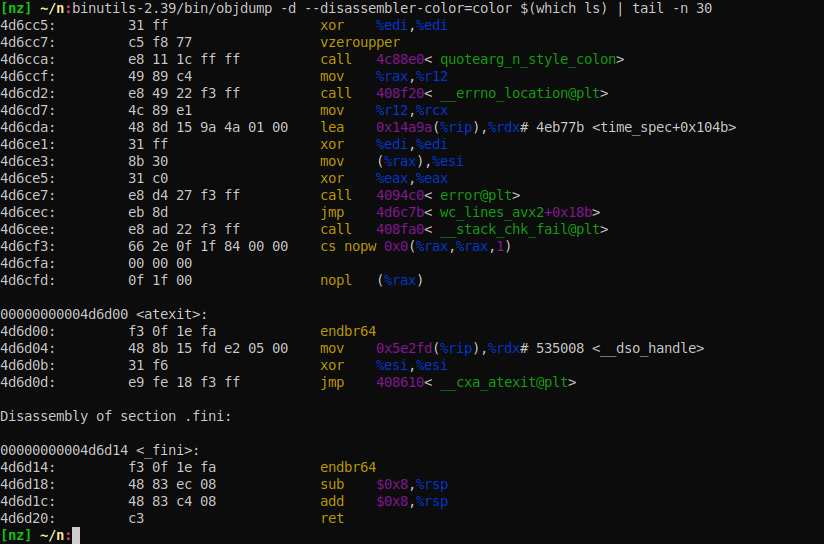

binutils 2.39
A week ago new 2.39 release
of binutils saw the light of day.
New features
I found interesting these additions:
- colors in
objdump -d --disassembler-color=coloroutput gprofngtool is enabled by default now (gprofng announcement)
Colored objdump looks good:

The blue-on-black text is a bit hard to read. Soon
it will be tweakable via OBJDUMP_COLORS environment variable.
gprofng requires some work to finish the packaging:
With a bit of tweaking I was able to get gprofng to run:
$ gprofng collect app $(which htop)
Creating experiment directory test.1.er (Process ID: 3545207) ...
$ gprofng display text -functions test.1.er/
Functions sorted by metric: Exclusive Total CPU Time
Excl. Total Incl. Total Name
CPU CPU
sec. % sec. %
0.420 100.00 0.420 100.00 <Total>
0.150 35.71 0.150 35.71 read
0.060 14.29 0.060 14.29 openat
0.040 9.52 0.040 9.52 __strchr_avx2
0.030 7.14 0.030 7.14 write
0.020 4.76 0.020 4.76 __getdents
0.010 2.38 0.030 7.14 LinuxProcessList_readStatFile.constprop.0
0.010 2.38 0.320 76.19 LinuxProcessList_recurseProcTree.isra.0
0.010 2.38 0.020 4.76 RichString_appendWide
0.010 2.38 0.010 2.38 RichString_appendnAscii
0.010 2.38 0.010 2.38 __close_nocancel
0.010 2.38 0.010 2.38 __gconv_transform_internal_utf8
0.010 2.38 0.010 2.38 __memchr_avx2
0.010 2.38 0.010 2.38 __vfprintf_internal
0.010 2.38 0.010 2.38 _nc_tiparm
0.010 2.38 0.170 40.48 fgets
0.010 2.38 0.010 2.38 iswprint
0.010 2.38 0.020 4.76 onscreen_mvcur
0. 0. 0.410 97.62 CommandLine_run
...In the output above both individual and cumulative times are reported for each function. Nothing fancy.
Output of the same sampling data with a calltree view:
$ gprofng display text -calltree test.1.er/
Functions Call Tree. Metric: Attributed Total CPU Time
Attr. Total Name
CPU
sec. %
0.420 100.00 +-<Total>
0.410 97.62 +-__libc_start_call_main
0.410 97.62 | +-CommandLine_run
0.360 85.71 | +-ScreenManager_run
0.270 64.29 | | +-ProcessList_scan
0.270 64.29 | | | +-LinuxProcessList_recurseProcTree.isra.0
0.150 35.71 | | | +-fgets
0.140 33.33 | | | | +-_IO_getline_info
0.130 30.95 | | | | +-_IO_default_uflow
0.130 30.95 | | | | | +-_IO_new_file_underflow
0.130 30.95 | | | | | +-read
0.010 2.38 | | | | +-__memchr_avx2
0.030 7.14 | | | +-LinuxProcessList_recurseProcTree.isra.0
0.020 4.76 | | | | +-openat
0.010 2.38 | | | | +-LinuxProcessList_recurseProcTree.isra.0
0.010 2.38 | | | | +-openat
0.020 4.76 | | | +-__GI_strstr
0.020 4.76 | | | | +-__strchr_avx2
0.020 4.76 | | | +-__strchr_avx2
0.020 4.76 | | | +-readdir
0.020 4.76 | | | | +-__getdents
0.010 2.38 | | | +-LinuxProcessList_readStatFile.constprop.0
0.010 2.38 | | | +-__new_fclose
0.010 2.38 | | | +-_IO_new_file_close_it
0.010 2.38 | | | +-__close_nocancel
0.060 14.29 | | +-wgetch
0.060 14.29 | | | +-_nc_wgetch
0.060 14.29 | | | +-wrefresh
0.060 14.29 | | | +-doupdate_sp
0.060 14.29 | | | +-TransformLine
0.040 9.52 | | | +-_nc_mvcur_sp
0.020 4.76 | | | | +-_nc_flush_sp
0.020 4.76 | | | | | +-write
0.020 4.76 | | | | +-_nc_real_mvcur.part.0
0.020 4.76 | | | | +-onscreen_mvcur
0.010 2.38 | | | | +-_nc_tiparm
0.010 2.38 | | | +-EmitRange
0.010 2.38 | | | | +-_nc_is_charable
0.010 2.38 | | | | +-wctob
0.010 2.38 | | | | +-__gconv_transform_internal_utf8
0.010 2.38 | | | +-PutRange
0.010 2.38 | | | +-_nc_mvcur_sp
0.010 2.38 | | | +-_nc_flush_sp
0.010 2.38 | | | +-write
0.030 7.14 | | +-Panel_draw
0.030 7.14 | | +-Process_display
0.030 7.14 | | +-LinuxProcess_writeField
0.030 7.14 | | +-Process_writeField
0.020 4.76 | | +-Process_writeCommand
0.020 4.76 | | | +-RichString_appendWide
0.010 2.38 | | | +-iswprint
0.010 2.38 | | +-Process_printBytes
0.010 2.38 | | +-RichString_appendnAscii
0.050 11.90 | +-ProcessList_scan
0.050 11.90 | +-LinuxProcessList_recurseProcTree.isra.0
0.020 4.76 | +-LinuxProcessList_recurseProcTree.isra.0
0.020 4.76 | | +-LinuxProcessList_readStatFile.constprop.0
0.020 4.76 | | +-xReadfileat
0.020 4.76 | | +-openat
0.020 4.76 | +-fgets
0.020 4.76 | | +-_IO_getline_info
0.020 4.76 | | +-_IO_default_uflow
0.020 4.76 | | +-_IO_new_file_underflow
0.020 4.76 | | +-read
0.010 2.38 | +-openat
0.010 2.38 +-__vfprintf_internalThis view is a bit more interesting: we can instantly see where all those string operations get called from.
gprofng seems to work \o/.
New bugs
Having sorted basic gprofng stuff I attempted to package binutils-2.39
in nixpkgs in PR185297.
I got a few problems when I tried to build the system against it. I’ll list
a few of them below.
Breaking API change: init_disassemble_info()
One of the unfortunate side-effects of added colouring is the
disassembler API change (patch):
init_disassemble_info() got an extra formatter parameter. The crucial
bit of the patch is the extra fprintf_styled_func parameter added:
@@ -394,11 +470,13 @@ extern bool generic_symbol_is_valid
/* Method to initialize a disassemble_info struct. This should be
called by all applications creating such a struct. */
extern void init_disassemble_info (struct disassemble_info *dinfo, void *stream,
- fprintf_ftype fprintf_func);
+ fprintf_ftype fprintf_func,
+ fprintf_styled_ftype fprintf_styled_func);I noticed it as a perf build breakage against linux.git tree:
util/annotate.c: In function 'symbol__disassemble_bpf':
util/annotate.c:1765:9: error: too few arguments to function 'init_disassemble_info'
1765 | init_disassemble_info(&info, s,
| ^~~~~~~~~~~~~~~~~~~~~The fix got merged into linux#master a few days ago as a set
of patches.
The gist of the fix is added feature detection against parameter count
(DISASM_INIT_STYLED) and use of the feature to wrap
init_disassemble_info() variants:
--- /dev/null
+++ b/tools/include/tools/dis-asm-compat.h
@@ -0,0 +1,55 @@
+static inline int fprintf_styled(void *out,
+ enum disassembler_style style,
+ const char *fmt, ...)
+{
+ va_list args;
+ int r;
+ va_start(args, fmt);
+ r = vfprintf(out, fmt, args);
+ va_end(args);
+ return r;
+}
+static inline void init_disassemble_info_compat(struct disassemble_info *info,
+ void *stream,
+ fprintf_ftype unstyled_func,
+ fprintf_styled_ftype styled_func)
+{
+#ifdef DISASM_INIT_STYLED
+ init_disassemble_info(info, stream,
+ unstyled_func,
+ styled_func);
+#else
+ (void)styled_func;
+ init_disassemble_info(info, stream,
+ unstyled_func);
+#endifWe will need to backport this fix to older kernel versions. Or pin
perf to older version of libbfd.
New warnings around executable stack
Another binutils-2.39 change was to enable warnings around
RWX sections (like stack and data) in
this change.
The announcement warns:
The ELF linker will now generate a warning message if the stack is made executable.
Some linux distributions already implement similar warning for a while
as a way to catch unintended executable stack on code base with assembly
.S files. I am glad to see it getting upstream now. It makes upstreaming
so much easier when people can easily reproduce the warning on their
distribution.
Some projects do not tolerate warnings from the linker. systemd
or efi-vars come to mind.
Users can disable new warning with --enable-warn-execstack=no if a
proper fix is too complicated.
In case of systemd, the upstream decided to be more lenient to warning
for EFI linking code. The proper fix was also trivial in this case:
gnu-efi library needed a few annotations.
The idea is simple: all manually written assembly .S files need
a note section that declares non-executable stack:
--- a/apps/trivial.S
+++ b/apps/trivial.S
@@ -41,3 +41,7 @@ _start:
hello: .byte 'h',0,'e',0,'l',0,'l',0,'o',0,'\n',0,'\r',0,0,0
#endif
+
+#if defined(__ELF__) && defined(__linux__)
+ .section .note.GNU-stack,"",%progbits
+#endifIt’s a lot of boilerplate to add the note to every .S file.
DWARF output regression
Another fallout was an elfutils-0.187 test failure:
FAIL: run-low_high_pc.sh
========================
[b] main.c
[2d] main
[b] ../sysdeps/i386/start.S
[26] _start
[40] ../sysdeps/x86/abi-note.c
[b52] init.c
[b8e] static-reloc.c
[2dba] _dl_relocate_static_pie
[2dd8] ../sysdeps/i386/crti.S
[2def] _init
lowpc: 8049000, highpc: 8049000lx
../sysdeps/i386/crti.S: [2def] '_init' highpc <= lowpc
FAIL run-low_high_pc.sh (exit status: 255)Here the test low_high_pc
complains about something about _init symbol.
Looking at the reported values the condition is highpc == lowpc.
DWARF specification describes
Debug Info Entries (DIEs) each of which consists of:
- a tag (
DW_TAG_*) like subprogram, others - a set of attributes key-value pairs (
DW_AT_*) like source language name, file ranges, file names and others
DWARF debug sections are named .debug*. We can inspect them using
readelf --debug-dump:
$ printf "int main(){}" | gcc -g -x c - -o a
$ readelf --debug-dump a
...
Contents of the .debug_info section:
...
Compilation Unit @ offset 0x2dea:
Length: 0x50 (32-bit)
Version: 5
Unit Type: DW_UT_compile (1)
Abbrev Offset: 0x4a2
Pointer Size: 8
<0><2df6>: Abbrev Number: 1 (DW_TAG_compile_unit)
<2df7> DW_AT_producer : (indirect string, offset: 0x19f6): GNU C17 12.1.0 -mtune=generic -march=x86-64 -g
<2dfb> DW_AT_language : 29 (C11)
<2dfc> DW_AT_name : (indirect line string, offset: 0x5): <stdin>
<2e00> DW_AT_comp_dir : (indirect line string, offset: 0x0): /tmp
<2e04> DW_AT_low_pc : 0x401106
<2e0c> DW_AT_high_pc : 0xb
<2e14> DW_AT_stmt_list : 0x96c
<1><2e18>: Abbrev Number: 2 (DW_TAG_subprogram)
<2e19> DW_AT_external : 1
<2e19> DW_AT_name : (indirect string, offset: 0x1a25): main
<2e1d> DW_AT_decl_file : 1
<2e1e> DW_AT_decl_line : 1
<2e1f> DW_AT_decl_column : 5
<2e20> DW_AT_type : <0x2e36>
<2e24> DW_AT_low_pc : 0x401106
<2e2c> DW_AT_high_pc : 0xb
<2e34> DW_AT_frame_base : 1 byte block: 9c (DW_OP_call_frame_cfa)
<2e36> DW_AT_call_all_calls: 1
<1><2e36>: Abbrev Number: 3 (DW_TAG_base_type)
<2e37> DW_AT_byte_size : 4
<2e38> DW_AT_encoding : 5 (signed)
<2e39> DW_AT_name : int
<1><2e3d>: Abbrev Number: 0
...Here we can see that <stdin> file (DW_TAG_compile_unit) was using
C11 language, main symbol is a subprogram (DW_TAG_subprogram)
defined in line 1 column 5 of the file. DW_AT_low_pc / DW_AT_high_pc
encode a range where code of subprogram is located in virtual memory.
Back to our elfutils example
../sysdeps/i386/crti.S: [2def] '_init' highpc <= lowpc was complaining
about invalid code location in virtual memory. It looks like the
encoding claimed that _init is 0 bytes long. Failure happened only on
i686-linux and not x96_64-linux. It’s because _init code is very
different on i686 and x86_64.
Here is the reproducer:
.section .init,"ax",@progbits
.p2align 2
.globl _init
.hidden _init
.type _init, @function
_init:
.section .text.__x86.get_pc_thunk.bx,"axG",@progbits,__x86.get_pc_thunk.bx,comdat
.globl __x86.get_pc_thunk.bx
.hidden __x86.get_pc_thunk.bx
.p2align 4
.type __x86.get_pc_thunk.bx,@function
__x86.get_pc_thunk.bx:
ud2
.size __x86.get_pc_thunk.bx, . - __x86.get_pc_thunk.bx
.previous
ud2The code above defines _init symbol in .init section with a single
ud2 instruction and __x86.get_pc_thunk.bx symbol in
.text.__x86.get_pc_thunk.bx section with a single ud2 instruction.
Note that .size directive (to specify size of function) is not set on
_init and present only on __x86.get_pc_thunk.bx.
binutils-2.38 used to generate the following DIEs:
$ as-2.38 --gdwarf2 --32 -o crti.o crti.S.S
$ readelf -aW --debug-dump crti.o
...
<0><b>: Abbrev Number: 1 (DW_TAG_compile_unit)
<c> DW_AT_stmt_list : (data4) 0x0
<10> DW_AT_ranges : (data4) 0x0
<14> DW_AT_name : (strp) (offset: 0x0): crti.S.S
<18> DW_AT_comp_dir : (strp) (offset: 0x9): /home/slyfox/dev/bugs/binutils-2.39-crti-size/delta
<1c> DW_AT_producer : (strp) (offset: 0x3d): GNU AS 2.38
<20> DW_AT_language : (data2) 32769 (MIPS assembler)binutils-2.39 started emitting a bit more info:
$ as-2.39 --gdwarf2 --32 -o crti.o crti.S.S
$ readelf -aW --debug-dump crti.o
...
<0><b>: Abbrev Number: 1 (DW_TAG_compile_unit)
<c> DW_AT_stmt_list : (data4) 0x0
<10> DW_AT_ranges : (data4) 0x0
<14> DW_AT_name : (strp) (offset: 0x0): crti.S.S
<18> DW_AT_comp_dir : (strp) (offset: 0x9): /home/slyfox/dev/bugs/binutils-2.39-crti-size/delta
<1c> DW_AT_producer : (strp) (offset: 0x3d): GNU AS 2.39
<20> DW_AT_language : (data2) 32769 (MIPS assembler)
<1><22>: Abbrev Number: 2 (DW_TAG_subprogram)
<23> DW_AT_name : (strp) (offset: 0x49): _init
<27> DW_AT_external : (flag) 1
<28> DW_AT_low_pc : (addr) 0x0
<2c> DW_AT_high_pc : (addr) 0x0
<1><30>: Abbrev Number: 2 (DW_TAG_subprogram)
<31> DW_AT_name : (strp) (offset: 0x4f): __x86.get_pc_thunk.bx
<35> DW_AT_external : (flag) 1
<36> DW_AT_low_pc : (addr) 0x0
<3a> DW_AT_high_pc : (addr) 0x2
<1><3e>: Abbrev Number: 0Note that DW_TAG_subprogram was not present for any of two symbols in
binutils-2.38. And binutils-2.39 defines both: __x86.get_pc_thunk.bx
of size 2 and _init of size … 0! It ended up being a gas bug and
Jan fixed with the patch.
After the fix DWARF sections have the following look:
$ as-2.39 --gdwarf2 --32 -o crti.o crti.S.S
$ readelf -aW --debug-dump crti.o
...
Contents of the .debug_info section:
Compilation Unit @ offset 0x0:
Length: 0x2d (32-bit)
Version: 2
Abbrev Offset: 0x0
Pointer Size: 4
<0><b>: Abbrev Number: 1 (DW_TAG_compile_unit)
<c> DW_AT_stmt_list : (data4) 0x0
<10> DW_AT_ranges : (data4) 0x0
<14> DW_AT_name : (strp) (offset: 0x0): crti.S.S
<18> DW_AT_comp_dir : (strp) (offset: 0x9): /home/slyfox/n
<1c> DW_AT_producer : (strp) (offset: 0x18): GNU AS 2.39
<20> DW_AT_language : (data2) 32769 (MIPS assembler)
<1><22>: Abbrev Number: 2 (DW_TAG_subprogram)
<23> DW_AT_name : (strp) (offset: 0x24): __x86.get_pc_thunk.bx
<27> DW_AT_external : (flag) 1
<28> DW_AT_low_pc : (addr) 0x0
<2c> DW_AT_high_pc : (addr) 0x2
<1><30>: Abbrev Number: 0As expected _init does not have DW_AT_low_pc / DW_AT_high_pc
values anymore and elfutils tests run successfully.
As crti.S is a file from glibc that made me wonder why crti.o
was not stripped off .debug* sections. It ended up being a nixpkgs
bug in a debuginfo separation hook. The hook was meant to move all .debug* sections
from ELF files in /lib to /lib/debug. For files where the hook
did not work it did not apply stripping at all. Fixed with
PR185537 now.
Parting words
binutils-2.39 does not look too problematic so far. It will need a bit
of backporting to fix linux and perf. But otherwise the release look
benign.
gas bug uncovered nixpkgs’s stripping code bug. It’s funny how one
is required to trigger another. Luckily both are fixed now.
Once I get perf fixed I’ll ask for a full hydra run to get more
potential failures.
Have fun!